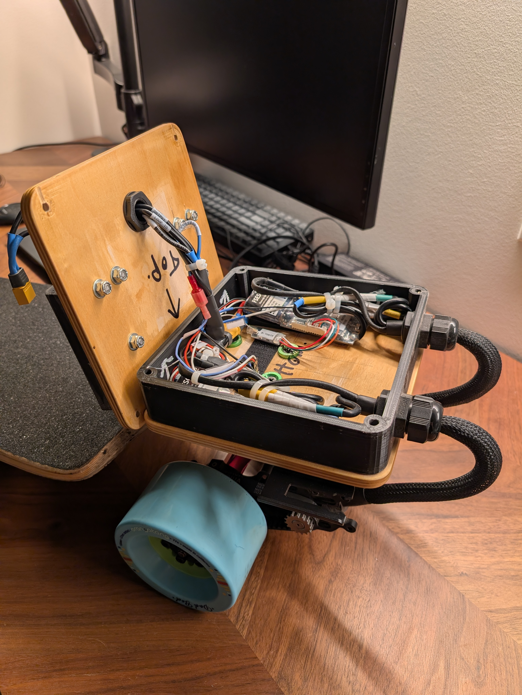

Projects
Selected engineering projects from my portfolio.
-

Cycling Time Trial Armrests
Designed custom time trial armrests around personal measurements to maximize control, comfort, and aerodynamics under strict international sporting regulations. The geometry is tuned to strategically detach airflow from the body while providing both linear and rotational adjustment. The parts were modeled in Autodesk Inventor and manufactured using FDM 3D printing in PLA, with geometry and wall structure optimized around the material’s strength limits.
-
Electric Skateboard Electronics Battery Mount and Housing
Developed a modular, quick-swappable battery housing and electronics mount for an electric skateboard that can withstand rough terrain. The design uses FDM-printed mounts and housing combined with a ¼″ plywood lid and base in a sandwich structure, transferring main tensile loads into bolts rather than into printed parts. Cable glands improve water resistance and aesthetics, while cable sheaths provide additional protection and strain relief. Four through-bolts with nylock nuts allow fast disassembly and maintenance. Modeled and iterated in Autodesk Inventor.
-
Bicycle Seat Light Mount
Created a lightweight taillight mount that positions the light perpendicular to the ground for optimal visibility while keeping clearance for an under-saddle bag. The mount reuses existing hardware and mounting points on the underside of the saddle, minimizing additional components and weight. The part was modeled in Autodesk Inventor and produced with FDM 3D printing in PLA.
About
I am a Mechatronics Engineering student at the University of Waterloo and a Canadian National Team track cyclist. I combine hands-on mechanical design with high-performance sport, using prototyping, CAD, and data to solve practical problems on and off the bike. I am particularly interested in the aerospace industry.
My interests include cycling, mechanical design, robotics, and control systems. I enjoy taking projects from concept to functional prototype, with a focus on real-world constraints like manufacturability, durability, and sporting regulations.
.